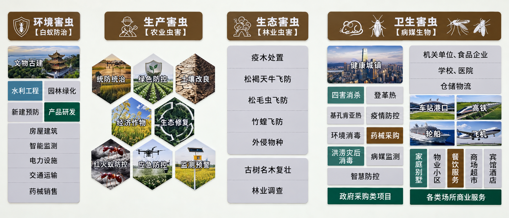

虫害防治药剂
开展虫害防治药剂研发，探索适合虫害防控需求的技术路径。
药剂研发湖南华宝有害生物防治有限公司于2014年在武冈成立，2019年迁至邵阳市大祥区，2026年总部迁入湖南长沙隆平产业开发区，现运营长沙、邵阳和怀化分公司。
公司具备农林业病虫害、病媒生物防治、白蚁综合治理及环境卫生消毒等专业技术服务能力，累计服务餐饮酒店、食品企业、学校医院等客户5000+，持续为城乡环境与公共卫生安全提供专业支持。
我们坚持“尊重生态、控制危害”，将防治重点放在实际危害上，以科学识别、合理干预与持续管理，守护青山绿水与健康家园。
企业精神 忠诚 · 团结 · 担当 · 奉献
从一地扎根，到多城协同
每一步，都是对主业的深耕
公司在武冈成立，扎根有害生物防治领域，开启专业服务之路。
公司迁至邵阳市大祥区，持续积累防治经验，发展专业服务能力。
总部迁入湖南长沙隆平产业开发区，以新起点推进技术创新与数智化探索。
以白蚁防治为特色
覆盖环境虫控与农林生态服务
围绕白蚁对建筑、木质构件及相关设施的危害，开展有针对性的防治服务。关注隐蔽风险，让治理更有依据。
聚焦白蚁综合治理、农林业病虫害防治、病媒生物防制与环境卫生消毒，形成面向不同场景的综合服务能力。
华宝业务展示墙
一般项目：白蚁防治服务；病媒生物防制服务；病媒生物密度控制水平评价服务；病媒生物密度监测评价服务；农作物病虫害防治服务；林业有害生物防治服务；园林绿化工程施工；城市绿化管理；城市公园管理；专业保洁、清洗、消毒服务；生态资源监测；生态恢复及生态保护服务；土壤环境污染防治服务；农业面源和重金属污染防治技术服务；农业机械服务。（除依法须经批准的项目外，凭营业执照依法自主开展经营活动）
许可项目：建筑劳务分包；建设工程施工；文物保护工程施工；农药零售。（依法须经批准的项目，经相关部门批准后方可开展经营活动，具体经营项目以相关部门批准文件或许可证件为准）
专业资质、人才队伍与作业装备
共同支撑综合虫控服务
以技术人才为基础，汇聚白蚁、病媒生物与林业防治等专业力量，将专业能力落实到每一个服务现场。
学历与专业资质为不同统计口径，人员类别可能交叉，不作简单加总。
支撑项目现场服务与人员调度
面向不同虫害与作业环境
为农林业防治作业提供装备支持
华宝虫控与中南林业科技大学合作研发白蚁智能监测诱杀一体装置，探索监测与治理相结合的防控方式。公司持续推进与科研院所、高等院校的战略合作，让科研与现场防治需求相连接。
以持续研发推动能力升级
逐步探索数智化防控体系
开展虫害防治药剂研发，探索适合虫害防控需求的技术路径。
药剂研发围绕白蚁监测、诱集与治理一体化，推进装置研发与技术探索。
装置研发以服务管理信息化为研发方向，探索技术与日常虫控业务的结合。
系统研发围绕虫害信息与预警需求，开展平台研发，探索数据辅助防控。
平台研发5000+客户的服务积累
从经营空间到公共环境，关注每一处需求
白蚁在自然生态系统中承担分解有机物、促进物质循环的作用。
我们关注的是实际危害，以科学、合理、精准的治理，守护人与自然共同的空间。
现场图片由公司提供；怀化分公司开业配图为视频截图。更多动态及招聘信息，请关注官方抖音账号。
防治从了解现场开始。
关注官方抖音账号“tangyinhua688”，发送老鼠、蟑螂、白蚁等虫害情况，可免费咨询解决方案。建议一并说明所在城市、场所类型和问题位置，并准备现场照片，便于沟通。涉及上门检查、施工及持续服务的安排和费用，另行沟通确认。
建议说明所在城市、场所类型、发现问题的位置和时间，以及大致影响范围。可准备现场照片、虫体照片或相关视频，帮助初步沟通。具体情况仍需专业人员结合现场判断。
防治费用与服务类型、现场面积、风险情况、实施条件和后续服务要求有关。建议先沟通需求，再根据评估情况明确服务内容与报价。
可通过官方抖音账号联系公司，说明应用场景和合作意向。装置的具体参数、适用范围、供货与服务安排，以公司正式提供的资料及沟通结果为准。
请在抖音搜索“tangyinhua688”，查看公司官方账号的最新发布。招聘岗位、工作地点及要求，以账号发布的有效信息为准。
老鼠 · 蟑螂 · 蚊蝇 · 白蚁
关注官方账号，可免费提供虫害解决方案。
也欢迎业务合作、研发交流与人才加入。
总部：湖南长沙隆平产业开发区
分公司：长沙 · 邵阳 · 怀化